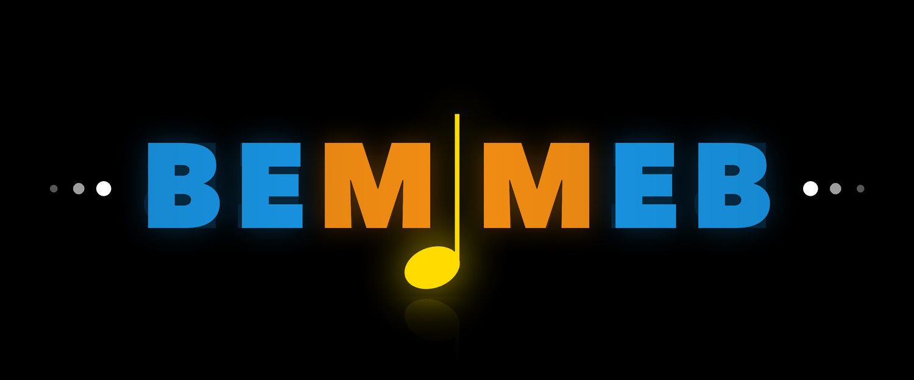

We can't tell which Music Education Bite this message is for, so we can't accept a recording from this link.
Please go back to the Music Education Bites page and use the record button there.
Record a short message — your voice, or yourself on camera. Voice messages can be up to 90 seconds, video up to 60.
Your browser will ask permission for the microphone or camera. Nothing is sent until you press send.
0:00
It's a message about —.
Your reference code:
—
Keep this code. If you ever want your recording removed, email luc.nijs@uni.lu quoting it and we will delete it. You don't need to give a reason.
We listen to every message. Not all are published, and we can't reply individually — but thank you for taking the time.